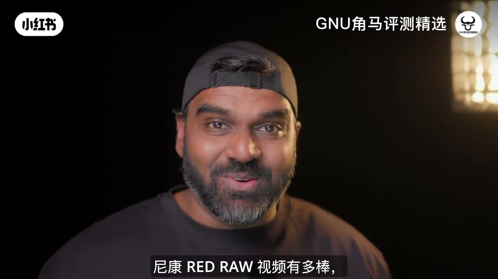
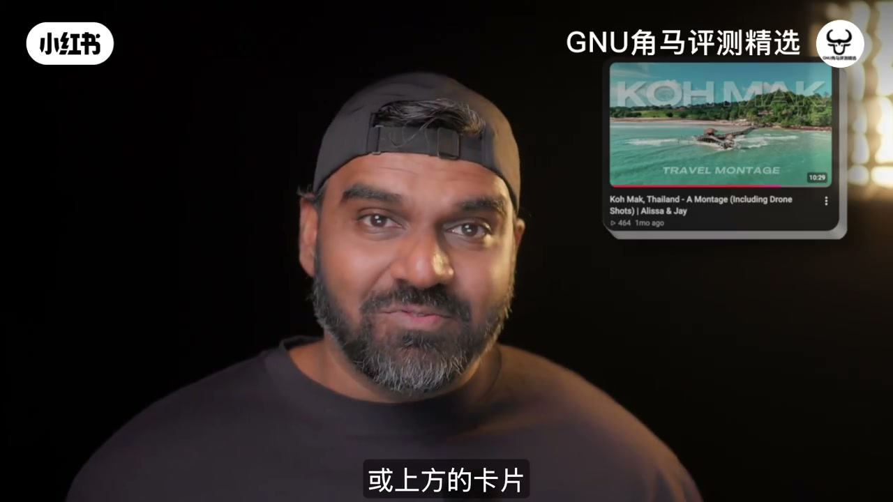
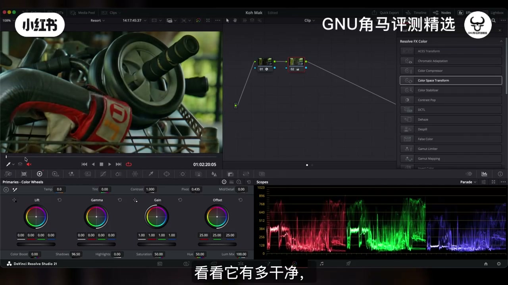

作者的结论不是「ZR 差」，而是：对自己这种大量旅拍、不能把硬盘费用转嫁客户的人，可用性（体积、电源、EVF、握持、存储）比 RED RAW 参数更决定去留——所以留下 Z6III，不买 ZR。
00:00–03:30开场：岛屿样片与「为什么要拍 RAW」
视频前半段几乎没有英文口播（Whisper 仅在片头留一句背景人声），叙事靠旅拍样片与中文硬字幕推进。开场是高马岛一带的海平面日落：天空从蓝压到橙粉，水面留着细碎反光，字幕写「视频变得无比电影感」，并点出与 RED RAW / R3D 相关的拍摄设定。随后切到作者口播特写——反戴棒球帽、暗色背景——中文字幕说到第一次试用与脑海里的幻想，把观众从「样片好看」拉到「这台机到底适不适合我」。
约 01:15 出现俯拍码头：木栈道伸进碧蓝海水，山坡上红瓦小屋藏在热带树影里，用来证明机内/样片成片的色彩与清晰度。约 02:05，画面切到大标题卡「Why Film Videos In RAW Format...???」，中文字幕「最大的原因」预告：后面要用 DaVinci 把 RAW 的优势讲透，再讲为什么自己仍然不靠它过日子。

[00:08] 开场岛屿日落样片：硬字幕写「视频变得无比电影感」，铺垫 RED RAW 观感。
Opening island sunset sample: hard-sub says the video looks incredibly cinematic, previewing the RED RAW look.

[01:15] 码头俯拍样片：用来展示旅拍成片的色彩与清晰度。
Aerial pier sample: used to show travel footage color and sharpness.
[02:05] 标题卡「为什么用 RAW 拍视频」：转入技术论证段落。
Title card “Why film videos in RAW”: transitions into the technical argument.
03:30–05:56DaVinci：阴影与 ISO，RAW 能救回多少
自约 03:30 起，英文口播与 Resolve 界面同步出现。作者在节点图里另加一层，用色轮抬阴影：原先死黑的区域亮起来，噪点却「几乎没有」——他还特意说降噪基本关着。接着把 ISO 继续往上推，甚至演示到 ISO 6400（并强调「我们其实不想这么干」），说明 R3D 在曝光与色温上的容错。
傍晚片段拉阴影约 50% 后，示波器与放大预览都显示噪点极低；他调侃：手机上看根本察觉不到。收束句很干脆——这些都归功于 RAW 的后期自由度，但「代价很沉重」。于是画面立刻切到下一张标题卡：Why NOT Film In RAW。
Look at how noise free it looks. … This is all possible thanks to the editing flexibility with these raw files.（看看有多干净……这些都多亏 RAW 的剪辑自由度。）

[03:40] Resolve 演示：抬阴影后暗部细节回来，字幕强调「看看它有多干净」。
Resolve demo: lifting shadows recovers shadow detail; subtitle stresses how clean it looks.
05:56–08:30为什么不拍 RAW：每天 59 分钟与三天 1.9TB
「不拍 RAW」的理由，作者说是显而易见的：文件体积。他强调不只针对 RED RAW，而是所有 RAW 视频——对自己这种旅行狂拍、还要拍口播的人，都不合适。岛屿行程的实验目标很具体：看能不能只靠一张 650GB CFexpress Type-B 卡拍完当天所需；他不太执着全片 6K，更想验证 R3D「是不是像宣传的那么神」。
为了多拍，他在分辨率上让步，保住帧率与格式：4K60 RED RAW 下，650GB 大约只够每天 59 分钟。若没有随身 4TB SSD 每晚备份，整趟旅行就只有这一张卡——三天合计也只能录约一小时。他本以为「一天一小时太狠」，结果反而逼自己只拍真正需要的镜头；三天下来，仅 ZR 就累计约 1.9TB。屏幕上打出「STRINGENT FILMER」（严格拍摄者），中文字幕是「我只拍需要的东西」。
[05:58] 「为什么不拍 RAW」标题卡：从技术优势转入体积与工作流成本。
“Why NOT film in RAW” title card: shifts from technical upside to file-size and workflow cost.
自称混合拍摄者：大约一半视频、一半照片，长期偏爱紧凑无反。曾同时拥有 Sony A7C II、A7C R 与富士 X100VI，也夸过 APS-C 镜头与 A6700——旅拍内容多，4K H.265 落在便宜 SD 卡上就够用。后来为了更好的防护与连拍（野趣），升级到 Sony A7 IV 与尼康 Z6III；眼下还在临时测试 Lumix S1II，看能否替换 A7 IV 的混摄定位。
Outdoor monitoring: even a bright rear screen struggles in strong light, so he strongly wants an EVF.
14:15–17:27结论：不买 ZR；旅行党更值 Z6III
标题卡打出「Is The Nikon ZR THE RIGHT CAMERA For Me?」后，答案是响亮的「不」。今天他并不拥有 ZR。他更看重 Z6III 的 EVF——拍口播用的正是试用 ZR 之后入手的 Z6III。在他眼里，ZR 相对 Z6III 几乎只多了 RED RAW；而自己只是和妻子一起轻松旅拍的人，Z6III 的 N-Log 与 A7IV 的 S-Log3 已经够灵活，只需曝光更仔细，不需要 RAW 那档优势。
We select another node to increase the shadows in the color wheel.
Here is where the things get interesting.
Look at these areas being dark, brightening up as I increase the shadows.
Look at how noise free it looks.
Without this node, shadows are completely dark.
And with this node, we got back a lot of details from the pitch black shadows, like it's almost noise free.
The denoising is basically off and we can see minimal, very minimal,
, but I'm just demonstrating the flexibility of these raw files.
If I keep increasing the ISO further, it becomes a bit too bright.
But the thing is, I can even take it up to ISO 6400, which we really don't want.
The events are happening at the evening time.
There is no clipping here.
Now we are going to use the color wheels to increase the shadows by 50%.
And this is a very nice clip already.
You can see the scopes are saying the same.
Now we can enlarge it and see that there is very minimal noise.
If you were to watch this video on a phone, you wouldn't even notice this noise.
This is all possible thanks to the editing flexibility with these raw files.
These files are a bit more versatile.
But they come at a hefty cost.
Here's where I get to the part of why not record in raw format.
Well, obviously, it's a no-brainer.
It's because of the massive file sizes.
I'm not just talking about the red raw files.
I'm talking about the raw files in general.
The raw format is not for me, who shoot loads of videos during my travels,
or for filming talking head videos like this.
Let me put things into perspective.
For my island shoot, my intention was to see if I can film everything I needed
with just my 650GB CFexpress Type-B card.
I was not too keen on filming everything in 6K.
But I was interested to know the red raw files are as good as the people claim it to be.
I wanted to see the magical red looks from these R3D files.
To maximize the amount of footage I can shoot per day,
I decided to compromise on the resolution over the frame rates or the format.
I had only 59 minutes of video recording space per day
using my 650GB card,
recording in 4K 60 frames per second in red raw format.
If I hadn't taken my 4TB SSD to back up my files by the end of the day every day,
the 650GB would be all I had for the entire trip.
That means I would be recording only for about 59 minutes in all three days.
I initially thought just one hour of filming per day would be too limiting,
but it kind of made me a stringent filmer.
I only shot what I needed.
All in all, in those three days' time,
I ended up filming up to 1.9TB only using the Nikon ZR.
For the professionals who shoot for their clients like weddings,
events and commercial filmmakers,
this kind of file sizes is nothing.
They can afford to chew through terabytes and terabytes of SSDs,
and they can bill their clients for these and recoup for the business expenses.
Even if anything went bad in the video,
they get more post-processing flexibility using these raw files.
But the entry-level pricing of the Nikon ZR
tells me that they're targeting the entry-level filmmakers
and video enthusiasts like us.
We can't recoup our expenses as well as the business people.
We film a project, finish editing it,
and then delete these massive raw files to make space for the next project.
Otherwise, we will not have enough space to store in our hard disk.
Nikon seems to understand this,
and that's why they're trying to bring in their RedSauce
into their H.265 codec in an update to the Nikon ZR.
Once that is out, we will have to wait and see
how better it is than the H.265 N-Log videos in the Nikon ZR
or even the Nikon Z63.
Either way, I'm very excited for the updates.
Is the Nikon ZR for me?
To answer this question, I asked myself,
can I not do the things that I do with ZR with my existing cameras,
only if the Nikon ZR offers something
that I absolutely need,
that my current camera doesn't offer,
I need to think about owning a Nikon ZR.
To expand on this, I need to talk about my experience
using the Nikon ZR,
things I like, I dislike,
and the frustrations that could pile up over time.
I'm a hybrid shooter shooting 50% of videos and 50% of photos.
And if you have been following this channel for any amount of time,
you know that I am a big fan of compact mirrorless cameras.
At one point, I was just owning a Sony A7C2,
a Sony A7C-R, and a Fujifilm X100-6,
and I have sung praises about the APS-C lenses
and the Sony A6700.
All these are compact bodies and lenses.
I just loved their incredible performance in these tiny packages.
As my majority of the contents are based on travel,
I really enjoyed using them.
Their file sizes weren't that big.
Recording in 4K H.265 codec,
I was able to record everything that I needed,
in these inexpensive SD cards.
And they just worked for the most part.
I of course upgraded to the Sony A7-5 and the Nikon Z6-3,
for better weather sealed bodies,
and higher burst rates for my interest in wildlife photography.
I am temporarily testing the Lumix S12,
to see if that could replace my Sony A7-5 for my hybrid needs.
So please consider subscribing to the channel,
and hit the bell icon to get notified in the future,
when I release those comparison videos.
Before switching to Sony compact bodies,
I was using the Nikon Z6-2 and the D500.
I just love the colors from those cameras.
And I had this constant urge to switch back to Nikon cameras.
But there is a reason why I am not completely switching back to the Nikon systems,
which is a separate discussion for another video.
When the Nikon ZR was released,
I was extremely ecstatic to own a very capable compact body from Nikon.
I was disappointed the first time I saw the bulky body of the Nikon ZR in person.
It's just big with the form factor of the Sony ZVE-1.
I was even more disappointed when I held it and felt the heft of it.
It was not even comparable to the size and weight of the Sony ZVE-1.
Just the form factors look alike.
But that's on me though.
I misjudged the size and weight of the Nikon ZR just by looking at the photos.
But that said,it felt very solid on my hands,except for the grip.
One of the great parts of the Nikon cameras are the grips.
But the Nikon ZR unfortunately doesn't have a grip.
Instead,it is a plank cine camera rather than the box cine camera.
Even the grips like the small rig aren't that great to hold.
It just doesn't induce confidence while holding the camera with massive Nikon lenses.
The placement of the on button was the biggest annoyance for me.
Did you hear me say on button?
It's not on lever.It's on button.
I'm just not used to on buttons because I've been using the on levers for like 15 years on many different cameras.
Two of which were Nikon cameras.
The placement of the on button took me some time to get used to from my usual one-hand operation with the on lever on the right side of my camera.
But the most disappointing part about this on button is actually it's made to be punched,not just touched gently.
I understand that it is made that way to prevent accidental turn-ons.
But damn,that's annoying.
There were countless times it happened that while holding the camera with the heavy F1.2 lens and pressing the power button on the other hand,
then quickly bringing the same hand to hold the lens in front to bring the camera display to the eye level,only to realize the display is still blank and the camera hasn't turned on.
I then have to take my hand off the lens,smack the power button and bring it back on to my eye level.
If you're wondering why I have to bring the camera to the eye level,it's about the display.
I will get back to that in a short while.
I want you to understand the frustrations I had to go through multiple times.
In fact,every single time I had to turn on the camera.
When it comes to the menus or the buttons,I wasn't really bothered about the menu system or the lack of enough customization buttons.
I've been long accustomed to using compact bodies with limited customization options.
I also know how to set up the camera the way I want them to work for the things I do.
At this point,I also have to mention that this camera is not as responsive as the other Nikon cameras.
It has some level of delay,but it is as responsive as Sony cameras.
So that delay doesn't bother me.
I'm just mentioning that it is slower than the other Nikon cameras.
Now circling back to the massive 4-inch display,it is great for the most part.
But even with the super bright settings,which is much brighter than the Sony displays,
it still doesn't fare well with the bright outdoor daylight conditions.
I had to bring the display closer to the eyes and the reflective display doesn't really help.
I wish the camera came with the EVF.
I wish the Nikon ZR had the mechanical shutter for just in case situations.
But I'm really happy with the output I got for both photos and videos.
I was okay with the Nikon ZR's video stabilization performance.
In the callmark video you watched,I was mostly using the sports stabilization mode
and I think I got really good results.
Can you walk and get good results with that mode?
I don't think so.
Only the action cameras and gimbal cameras can do that very well.
The autofocus worked very well even in the pitch dark situations
And it focused right on the eye time and again.
Now that I have mentioned my likes and dislikes about the Nikon ZR,
I am ready to answer the question,is the Nikon ZR right camera for me?
The answer is an astounding no.
You should probably know the answer by now,because today I don't own a Nikon ZR.
I value the amazing EVF on the Nikon Z63.
In fact,I got this Nikon Z63 recording me right now,after I used the Nikon ZR.
To my eyes,the only advantage that Nikon ZR has over the Nikon Z63
is the capability to record in the Redraw format,which is not that important for me.
Unlike most professionals who can really take advantage of the Redraw files
for their mission critical projects,I'm just a chill dude filming my travels with my wife.
For my kind of videos,the N-Log and S-Log3 footage from the Z63 and A75
gives me plenty of flexibility already.
And I really don't need the Redraw or any RAW advantage.
I just need to be a bit more careful correctly exposing the footage.
Also when I travel and hold the camera in one hand,
I want my other hand to be free for whatever reasons.
And one-hand operability is extremely important with the power button
or power lever on my dominant hand.
And since I will be holding the camera in my dominant hand for prolonged period of time,
I really value the grip on the Nikon Z63.
With the baseplate though,it just fits my massive hands perfectly.
With all that said,you now understand that the usability of the camera
is equally important to what the camera or the camera system has to offer.
So to answer your question,should you buy the Nikon ZR today?
See,the value proportion with the Nikon ZR is undeniably good.
It's got the goodness of the Nikon Z63
and a bit more with 12-bit compressed Redraw recording capability
up to 6K 422 color depth.
All these in a compact body that doesn't even overheat.
This is a great feat at a compelling price tag.
These Redraw files provide exceptional dynamic range and editing flexibility,
which are undeniably useful for the professionals
who only got one shot at getting the footage.
We should appreciate the technology available for the consumers in the market today,
and thanks to Nikon.
But the way I see it is that the only people who make money out of
the Nikon ZR's greatest advantage will choose to work in this expensive workflow.
General travel enthusiasts like you and I
can't afford to own these massive hard disks anymore.
This 20 terabyte hard disk which I purchased two years ago
has tripled in price today.
That's the state we live in.
Nikon Z63 is a better value proposition for us.
I have given you all my opinions about the Nikon ZR
and now it's for you to decide if the Nikon ZR is the right camera for you.
My recommendation for you, as always,
is for you to go to a Nikon store or any retail store
and check out the camera yourselves in person
and then to decide whether you should buy that camera or not.